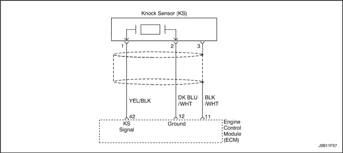
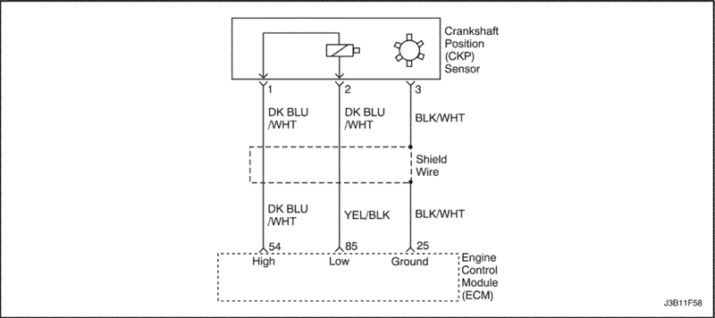

DTC P0300 -
Fallo de encendido múltiple de los cilindros detectado
Descripción del sistema
El módulo de control electrónico del motor (ECM) usa información del sensor de posición del cigüeñal (CKP) y del sensor de posición del árbol de levas (CMP) para determinar cuándo se está produciendo un fallo de encendido. Supervisando las variaciones en la velocidad de giro del cigüeñal para cada cilindro, el ECM puede detectar fallos de encendido individuales. Una frecuencia de fallos de encendido bastante alta puede provocar sobrecalentamiento y dañar el convertidor catalítico de 3 vías (TWC) en determinadas condiciones de conducción. La luz indicadora de fallos de funcionamiento (MIL) parpadeará cuando se den condiciones que puedan dañar el TWC. El DTC P0300 se activa si el ECM detecta una frecuencia de fallos de encendido suficiente para provocar niveles de emisiones que sobrepasen un valor predeterminado.
Condiciones para la ejecución del DTC
Condiciones para la activación del DTC
- El ECM detecta una variación en la velocidad de giro del cigüeñal, lo cual indica un fallo de encendido suficiente para provocar niveles de emisiones que sobrepasen un valor predeterminado.
Acción realizada cuando se activa el DTC
- Se enciende la luz indicadora de fallo de funcionamiento (MIL).
- El ECM registrará las condiciones de funcionamiento en el momento de la avería. Esta información se almacenará en las memorias intermedias de datos instantáneos y registros de averías.
- Se almacena un historial del DTC.
Condiciones para borrar el DTC y apagar la MIL
- La MIL se apagará después de un ciclo consecutivo de validación en el que el diagnóstico se realice sin fallos.
- El historial del DTC se borrará después de efectuar 40 ciclos consecutivos de calentamiento sin ninguna avería.
- El(los) DTC(s) puede(n) borrarse empleando un scanner.
Ayudas para el diagnóstico
Un fallo intermitente puede deberse a una rueda defectuosa en el reluctor. Desmonte el CKP y revise la rueda del reluctor a través del orificio del soporte del sensor. Compruebe el estado de dicha rueda y si presenta porosidad. Si el DTC es intermitente, consulte el apartado
"Diagnóstico por síntomas" de esta sección.
Descripción de la prueba
El (los) número(s) siguiente(s) hace(n) referencia al (a los) paso(s) que aparece(n) en la tabla de diagnóstico:
- La comprobación del sistema de diagnóstico avisa al técnico para que realice algunas comprobaciones básicas y almacene los datos instantáneos y los registros de averías en el scanner si procediese. Esto crea una copia electrónica de los datos recogidos cuando ocurrió el fallo de funcionamiento. La información se almacena en el scanner para una consulta posterior.
- Una inspección visual/física debe incluir la comprobación de los siguientes componentes:
- Compruebe si hay aplastamiento, cortes y conexiones defectuosas en el cableado.
- Compruebe si las conexiones a masa del ECM están limpias y apretadas.
- Compruebe los manguitos de vacío en busca de grietas, torceduras y conexiones defectuosas. Haga una inspección a fondo para constatar si hay algún tipo de fugas u obstrucciones.
- Compruebe si hay fugas de aire en la zona de fijación del cuerpo del acelerador y en las superficies de cierre estanco del colector de admisión.
- Cuando todos los acumuladores están relativamente igual, entonces el fallo de encendido viene provocado por algo que afecta a todo el motor. Cuando no lo están, entonces el fallo de encendido viene provocado por algo específico que afecta a dos o más cilindros.
- Cuando el fallo de encendido no esté presente, tal vez haya que hacer funcionar el vehículo para reproducir las condiciones de los datos instantáneos con el objeto de detectar dicho fallo de encendido. Dependiendo de la carga del motor, es posible que tengan que mantenerse las condiciones hasta durante 20 segundos. Siempre que los acumuladores de fallos de encendido empiecen a aumentar, hay algún fallo de encendido. Un contador del historial de fallos de encendido almacenará el número de fallos de encendido que se hayan producido hasta que se borre el DTC.
- Compruebe si en el combustible hay agua, alcohol, etc.
- Alcanzado este punto, sólo queda la posibilidad de un problema básico del motor que afecte a todos los cilindros (sincronización de levas, fuga en el cuerpo del acelerador, flujo de aire obstruido, etc.).
- Compruebe la salida de tensión del sistema de encendido con la ayuda de un comprobador de chispa.
- Sustituya cualquier bujía que esté desgastada, agrietada o sucia.
- Compruebe la tensión en el circuito de alimentación del encendido.
- Siempre que el circuito del controlador esté derivado a masa, se encenderá la luz de forma estable. Cuando el circuito del controlador esté abierto o en cortocircuito con la tensión, la luz se apagará.
- Puesto que se suministra la tensión al inyector de combustible en un solo circuito, el fallo de funcionamiento solamente puede consistir en una mala conexión o interrupción en el cableado de los inyectores. Una interrupción antes del cableado daría lugar a un fallo del tipo "El motor gira pero no arranca" .
DTC P0300 - Fallo de encendido múltiple de los cilindros detectado
| Paso | Medida | Valor(es) | Sí | No |
| 1 | Efectúe la comprobación del sistema de diagnóstico. ¿Se ha efectuado la comprobación? | - | Vaya al Paso 2 | |
| 2 | - Conecte un scanner al conector de diagnóstico (DLC).
- Gire la llave de contacto a la posición ON con el motor apagado.
- Solicite los códigos de diagnóstico de averías (DTCs).
¿Se activan los DTCs P0261, P0262, P0264, P0265, P0267, P0268, P0270 o P0271? | - | Consulte la tabla de DTCs específica | Vaya al Paso 3 |
| 3 | - Efectúe una inspección visual/física.
- Realice las reparaciones que sean necesarias.
¿Se ha realizado la reparación? | - | Vaya al Paso 27 | Vaya al Paso 4 |
| 4 | Ponga en marcha el motor y déjelo funcionando en ralentí. ¿Hay incrementos en los contadores de fallos de encendido en tiempo real? | - | Vaya al Paso 5 | Vaya al Paso 6 |
| 5 | ¿Marcan todos los contadores lo mismo (con un porcentaje de margen entre sí)? | - | Vaya al Paso 7 | Vaya al Paso 11 |
| 6 | - Gire la llave de contacto a la posición ON con el motor apagado.
- Revise los datos instantáneos y anote los parámetros.
- Haga funcionar el vehículo en las condiciones de los datos instantáneos y las condiciones requeridas para activar el DTC.
¿Hay incrementos en los contadores de fallos de encendido en tiempo real? | - | Vaya al Paso 5 | |
| 7 | - Apague el motor.
- Conecte un manómetro de presión de combustible a la rampa de inyectores.
- Observe la presión de combustible con el motor en marcha.
¿Está la presión de combustible dentro del valor especificado? | 380~402 kPa (55~58 lbs/pulg2) | Vaya al Paso 8 | |
| 8 | Compruebe que el combustible no esté contaminado. ¿Está el combustible bien? | - | Vaya al Paso 9 | Vaya al Paso 10 |
| 9 | Compruebe si hay algún problema básico del motor y repárelo si fuera necesario. ¿Se ha realizado la reparación? | - | Vaya al Paso 27 | - |
| 10 | Sustituya el combustible contaminado. ¿Se ha realizado la reparación? | - | Vaya al Paso 27 | - |
| 11 | - Apague el motor.
- Desenchufe el conector del cableado de los inyectores de combustible.
- Instale un comprobador de chispa en el cable de la bujía del cilindro nº 1.
- Arranque el motor y compruebe si hay chispa.
- Repita el procedimiento anterior en los cilindros nº 2, nº 3 y nº 4.
¿Hay chispa en los cables de las cuatro bujías? | - | Vaya al Paso 12 | Vaya al Paso 20 |
| 12 | Sustituya las bujías defectuosas si es necesario. ¿Se ha realizado la reparación? | - | Vaya al Paso 27 | Vaya al Paso 13 |
| 13 | - Apague el motor.
- Desenchufe los conectores de los inyectores.
- Conecte una lámpara de pruebas en el conector del cableado del inyector de los cilindros que hayan tenido fallos de encendido.
- Arranque el motor y observe la lámpara de pruebas.
¿Parpadea la lámpara de pruebas del inyector? | - | Vaya al Paso 14 | Vaya al Paso 15 |
| 14 | Efectúe la prueba de equilibrio de los inyectores de combustible. ¿Están bien los inyectores? | - | Vaya al Paso 9 | Vaya al Paso 16 |
| 15 | - Desconecte la lámpara de pruebas de los inyectores.
- Con la lámpara de pruebas conectada a masa, compruebe el terminal 2 de alimentación de encendido del conector del cableado del inyector de cada uno de los cilindros que tuvieron fallo de encendido.
- Arranque el motor.
¿Se enciende la lámpara de pruebas? | - | Vaya al Paso 17 | Vaya al Paso 19 |
| 16 | Sustituya cualquiera de los inyectores que esté defectuoso. ¿Se ha realizado la reparación? | - | Vaya al Paso 27 | - |
| 17 | Compruebe si hay alguna interrupción, cortocircuito o cortocircuito con la tensión en los terminales correspondientes del circuito del controlador del inyector de combustible afectado. ¿Se ha encontrado alguna avería? | - | Vaya al Paso 18 | Vaya al Paso 24 |
| 18 | Repare la interrupción o cortocircuito en el circuito del controlador del inyector de combustible. ¿Se ha realizado la reparación? | - | Vaya al Paso 27 | - |
| 19 | Repare el circuito de alimentación de encendido abierto entre el conector del cableado del inyector y el conector del inyector. ¿Se ha realizado la reparación? | - | Vaya al Paso 27 | - |
| 20 | Mida la resistencia del cable de la bujía que al verificarse con el comprobador de chispa no generó la chispa. ¿Es la resistencia del cable inferior al valor especificado? | 30000 Ω | Vaya al Paso 21 | Vaya al Paso 25 |
| 21 | Revise el conector y las conexiones del módulo de control electrónico del motor (ECM). ¿Están bien las conexiones? | - | Vaya al Paso 22 | Vaya al Paso 23 |
| 22 | Compruebe si hay alguna interrupción o cortocircuito en el circuito de control de encendido afectado y repárelo si fuera necesario. ¿Se ha realizado la reparación? | - | Vaya al Paso 27 | Vaya al Paso 26 |
| 23 | Repare el conector o las conexiones. ¿Se ha realizado la reparación? | - | Vaya al Paso 27 | - |
| 24 | - Gire la llave de contacto a la posición OFF.
- Sustituya el ECM.
¿Se ha realizado la reparación? | - | Vaya al Paso 27 | - |
| 25 | Sustituya el cable de la bujía. ¿Se ha realizado la reparación? | - | Vaya al Paso 27 | - |
| 26 | Sustituya la bobina de encendido defectuosa. ¿Se ha realizado la reparación? | - | Vaya al Paso 27 | Vaya al Paso 24 |
| 27 | - Borre los DTCs utilizando el scanner.
- Ponga en marcha el motor y déjelo en ralentí hasta que alcance la temperatura normal de funcionamiento.
- Haga funcionar el vehículo en las condiciones requeridas para activar este DTC, según se especifica en este manual.
¿Indica el scanner que este diagnóstico se ha realizado y superado? | - | Vaya al Paso 28 | Vaya al Paso 2 |
| 28 | Compruebe si se activa algún otro DTC. ¿Se activa algún DTC no diagnosticado? | - | Consulte la tabla de DTCs específica | Sistema OK |



DTC P0327 -
Fallo del circuito del sensor de picado de las bielas
Descripción del circuito
El sistema del sensor de picado de bielas (KS) se utiliza para detectar la detonación del motor, permitiendo que el módulo de control electrónico del motor (ECM) retrase la temporización de chispa del control de encendido en función de la señal del KS que se recibe. El KS genera una señal de CA de forma que cuando no hay detonación, la señal del circuito del KS mida aproximadamente 0,007 V CA. La amplitud y frecuencia de la señal del KS depende de la magnitud de la detonación que se produzca. El ECM contiene un módulo de filtro de detonación no -sustituible denominado módulo de filtro amplificador de la relación -señal-ruido (SNEF). Este módulo de filtro situado en el ECM determina si se está produciendo la detonación, comparando el nivel de la señal en el circuito del KS con el nivel de tensión en el canal de ruido. El canal de ruido permite que el ECM rechace una señal de detonación falsa conociendo el nivel de ruido mecánico normal del motor. El ruido normal del motor varía según la velocidad y carga del motor. Cuando el ECM determina que hay un nivel de tensión del canal de ruido anormalmente bajo, se activa un DTC P0327.
Condiciones para la ejecución del DTC
- La temperatura del refrigerante del motor sea superior a 65°C (149°F).
- El flujo de aire másico sea superior a 200 mg/pms.
- La velocidad del motor sea superior a 2.496 rpm.
Condiciones para la activación del DTC
- La tensión de la señal del KS sea inferior a 0,3490 V durante 10 segundos.
O
- La desviación de la señal del KS sea inferior a la prevista.
Acción realizada cuando se activa el DTC
- No se enciende la luz indicadora de fallo de funcionamiento (MIL).
- El ECM registrará las condiciones de funcionamiento en el momento de la avería. Esta información se almacenará en las memorias intermedias de datos instantáneos y registros de averías.
- Se almacena un historial del DTC.
Condiciones para borrar el DTC y apagar la MIL
- El historial del DTC se borrará después de efectuar 40 ciclos consecutivos de calentamiento sin ninguna avería.
- El(los) DTC(s) puede(n) borrarse empleando un scanner.
Ayudas para el diagnóstico
Compruebe y corrija los ruidos anormales del motor antes de utilizar la tabla de diagnóstico.
Cualquier circuito que se considere como posible causante del problema debe revisarse completamente y verificarse si presenta las siguientes anomalías:
- Terminales - desconectados.
- Acoplamiento defectuoso.
- Cierres rotos.
- Conformación indebida.
- Terminales dañados.
- Conexión defectuosa - entre- el cable y el terminal.
- Daños físicos en el cableado.
DTC P0327 - Fallo del circuito del sensor de picado de las bielas
| Paso | Medida | Valor(es) | Sí | No |
| 1 | Efectúe la comprobación del sistema de diagnóstico. ¿Se ha efectuado la comprobación? | - | Vaya al Paso 2 | |
| 2 | - Ponga el motor en marcha.
- Instale un scanner.
- Borre los códigos de diagnóstico de averías (DTCs).
- Haga funcionar el vehículo en las condiciones de los datos instantáneos y las condiciones requeridas para la ejecución del DTC.
¿Se enciende la luz indicadora de fallo de funcionamiento (MIL)? | - | Vaya al Paso 4 | Vaya al Paso 3 |
| 3 | - Gire la llave de contacto a la posición ON, el motor apagado.
- Revise los datos instantáneos y tome nota de los parámetros.
- Haga funcionar el vehículo en las condiciones de los datos instantáneos y las condiciones requeridas para la ejecución del DTC.
¿Se enciende la luz indicadora de fallo de funcionamiento (MIL)? | - | Vaya al Paso 4 | Vaya al Paso 12 |
| 4 | Escuche el motor mientras aumenta y reduce la velocidad del motor. ¿Se escucha alguna detonación o ruido? | - | Vaya al Paso 5 | Vaya al Paso 6 |
| 5 | Repare el problema mecánico del motor o el soporte o componente que esté flojo. ¿Se ha realizado la reparación? | - | Vaya al Paso 12 | - |
| 6 | - Gire la llave de contacto a la posición LOCK.
- Desconecte el módulo de control electrónico del motor (ECM).
- Con un polímetro (DVM) conectado a masa, mida la resistencia del sensor de picado de las bielas a través del circuito de señal de dicho sensor, terminal 42.
¿Está la tensión dentro del valor especificado? | 90-100KΩ | Vaya al Paso 7 | Vaya al Paso 9 |
| 7 | Compruebe que no haya una mala conexión entre el conector del ECM y el circuito de señal del sensor de picado de las bielas (KS). ¿Es necesaria la reparación? | - | Vaya al Paso 12 | Vaya al Paso 8 |
| 8 | Sustituya el módulo de control electrónico del motor (ECM). ¿Se ha realizado la sustitución? | - | Vaya al Paso 12 | Vaya al Paso 10 |
| 9 | Compruebe que no haya ninguna mala conexión en el conector eléctrico del KS y repárela si fuera necesario. ¿Es necesaria la reparación? | - | Vaya al Paso 12 | Vaya al Paso 10 |
| 10 | Compruebe si hay algún circuito abierto o tensión baja en el circuito de señal del KS y repárelo si fuera necesario. ¿Es necesaria la reparación? | - | Vaya al Paso 12 | Vaya al Paso 11 |
| 11 | Sustituya el KS. ¿Se ha realizado la sustitución? | - | Vaya al Paso 12 | - |
| 12 | - Borre los DTCs utilizando el scanner.
- Ponga en marcha el motor y déjelo en ralentí hasta que alcance la temperatura normal de funcionamiento.
- Haga funcionar el vehículo en las condiciones requeridas para la ejecución de este DTC, según se especifica en este manual.
¿Indica el scanner que se ha efectuado y superado con éxito el diagnóstico? | - | Vaya al Paso 13 | Vaya al Paso 2 |
| 13 | Compruebe si se activa algún otro DTC. ¿Se activa algún DTC no diagnosticado? | - | Consulte la tabla de DTCs específica | Sistema OK |

DTC P0335 -
Error eléctrico del sensor de posición del cigüeñal
Descripción del circuito
La señal de referencia 58X es generada por el sensor de posición del cigüeñal (CKP). Durante una revolución del cigüeñal se generan 58 impulsos del cigüeñal. El módulo de control electrónico del motor (ECM) utiliza la señal de referencia 58X para calcular la velocidad del motor y la posición del cigüeñal. El ECM controla constantemente el número de impulsos en el circuito de referencia 58X y los compara con el número de impulsos de señal de la posición del árbol de levas que se está recibiendo.
Condiciones para la ejecución del DTC
Condiciones para la activación del DTC
- La tensión mínima de la señal del CKP sea inferior a 1,3196 V.
O
- La tensión máxima de la señal del CKP sea superior a 2,3998 V.
O
- La diferencia entre la tensión máxima y mínima de la señal del CKP sea superior a 0,3617 V.
Acción realizada cuando se activa el DTC
- Se enciende la luz indicadora de fallo de funcionamiento (MIL).
- El ECM registrará las condiciones de funcionamiento en el momento de la avería. La información se almacenará en las memorias intermedias de datos instantáneos y registros de averías.
- Se almacena un historial del DTC.
Condiciones para borrar el DTC y apagar la MIL
- La MIL se apagará después de tres ciclos consecutivos de validación en los que el diagnóstico se realice sin fallos.
- El historial del DTC se borrará después de efectuar 40 ciclos consecutivos de calentamiento sin ninguna avería.
- El(los) DTC(s) puede(n) borrarse empleando un scanner.
Ayudas para el diagnóstico
El fallo intermitente puede deberse a una conexión defectuosa, la rotura -del aislamiento de los cables o a la existencia de un cable roto dentro de su aislamiento. Compruebe si se presentan las siguientes condiciones:
Mala conexión - Compruebe si el cableado y los conectores del ECM presentan mal acoplamiento, cierres rotos, terminales mal conformados o dañados y malas conexiones entre el terminal y el cable.
Cableado dañado - Compruebe si hay daños en el cableado. Si el cableado está bien, desconecte el ECM, gire la llave de contacto a la posición ON y observe el voltímetro conectado al circuito de referencia 58X en el conector del cableado del ECM, mientras mueve los conectores y el cableado correspondiente al ECM. Un cambio en la presentación de los datos que se visualizan en el scanner permitirá localizar el fallo.
La revisión del kilometraje del vehículo en los registros de averías desde que fallara la última prueba de diagnóstico puede ayudar a determinar la frecuencia con que se repite la condición que hizo que se activara el DTC. Esto puede servir de ayuda en el diagnóstico de la avería.
DTC P0335 - Error eléctrico del sensor de posición del cigüeñal
| Paso | Medida | Valor(es) | Sí | No |
| 1 | Efectúe la comprobación del sistema de diagnóstico. ¿Se ha efectuado la comprobación? | - | Vaya al Paso 2 | |
| 2 | Intente arrancar el motor. ¿Arranca el motor? | - | Vaya al Paso 3 | |
| 3 | - Revise y registre la información de registros de averías.
- Borre el DTC P0335.
- Arranque el motor y déjelo en ralentí durante 1 minuto.
- Borre los códigos de diagnóstico de averías (DTCs).
¿Se vuelve a activar el DTC P0335? | - | Vaya al Paso 4 | |
| 4 | - Desconecte el módulo de control electrónico del motor (ECM) y el sensor de posición del cigüeñal (CKP).
- Compruebe si hay alguna interrupción o derivación a masa en el conector del CKP y en el conector del cableado del ECM.
¿Se ha encontrado la avería? | - | Vaya al Paso 5 | Vaya al Paso 6 |
| 5 | Repare la interrupción o derivación a masa en el circuito de referencia 58X entre el conector del CKP y el conector del cableado del ECM. ¿Se ha realizado la reparación? | - | Vaya al Paso 11 | - |
| 6 | - Vuelva a conectar el ECM y el CKP.
- Conecte el polímetro (DVM) para medir la tensión en el circuito de referencia 58X y el terminal 54 en el conector del ECM.
- Observe la tensión mientras arranca el motor.
¿Está próxima la tensión al valor especificado? | 2,5 V | Vaya al Paso 9 | Vaya al Paso 7 |
| 7 | Compruebe la conexión en el CKP y sustituya los terminales si es necesario. ¿Es necesario sustituir algún terminal? | - | Vaya al Paso 11 | Vaya al Paso 8 |
| 8 | Sustituya el CKP. ¿Se ha realizado la sustitución? | - | Vaya al Paso 11 | - |
| 9 | Compruebe las conexiones en el ECM y sustituya los terminales si es necesario. ¿Algún terminal precisa ser sustituido? | - | Vaya al Paso 11 | Vaya al Paso 10 |
| 10 | Sustituya el ECM. ¿Se ha realizado la sustitución? | - | Vaya al Paso 11 | - |
| 11 | - Borre los DTCs utilizando el scanner.
- Ponga en marcha el motor y déjelo en ralentí hasta que alcance la temperatura normal de funcionamiento.
- Haga funcionar el vehículo en las condiciones requeridas para activar este DTC, según se especifica en esta sección.
¿Indica el scanner que este diagnóstico se ha realizado y superado? | - | Vaya al Paso 12 | Vaya al Paso 2 |
| 12 | Compruebe si se activa algún otro DTC. ¿Se visualiza algún DTC no diagnosticado? | - | Consulte la tabla de DTCs específica | Sistema OK |
 | |  | |
| © Copyright Chevrolet Europe. Reservados todos los derechos |